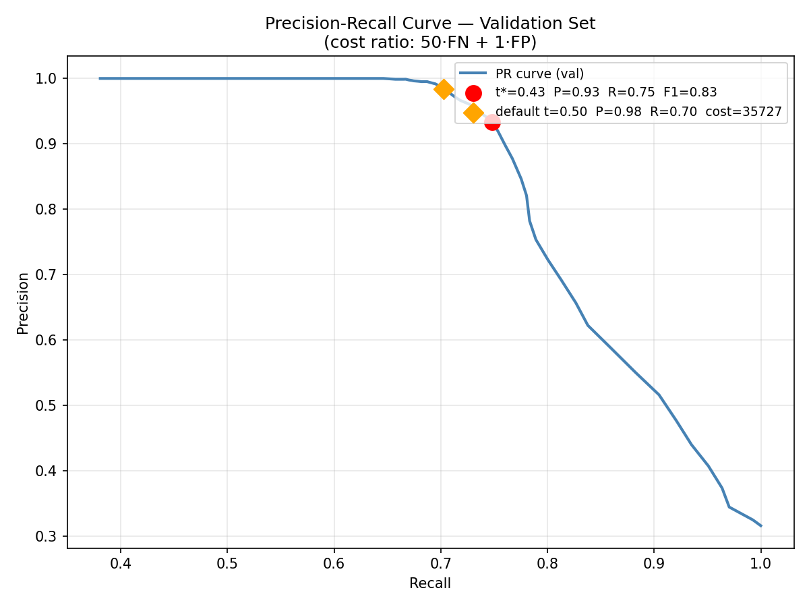
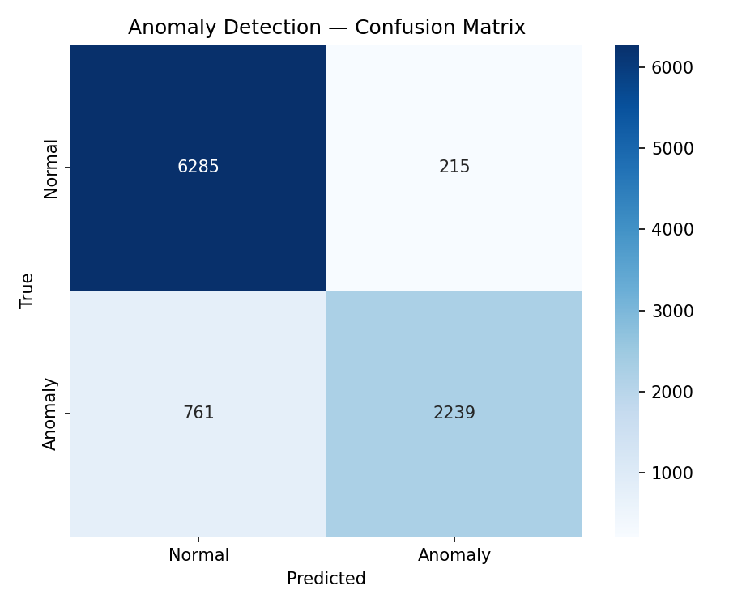
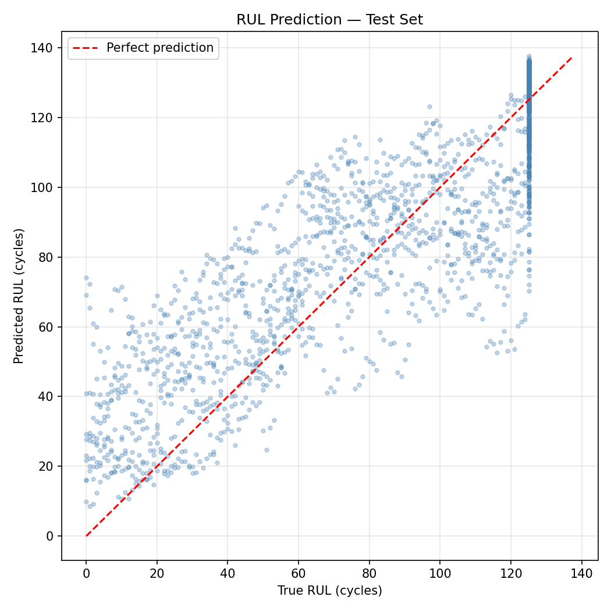

Test Set Performance
Loading…
Total Cost
—
r·FN + FP
Recall
—
FN: —
Precision
—
FP: —
RUL RMSE
—
cycles
Plots

Precision-recall curve (validation set). Loading…

Confusion matrix. Loading…

Predicted vs. true Remaining Useful Life across the test set. Diagonal indicates perfect prediction.